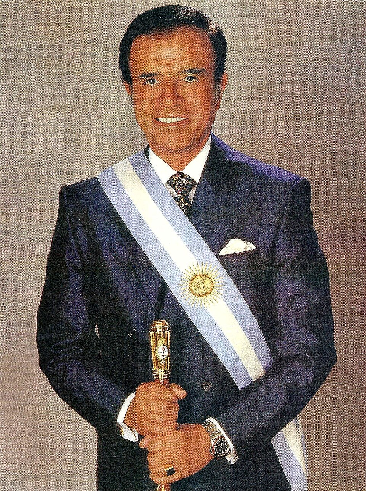

{kind=link}

![ Carlos Menem, 1989 About Me Research CV Multimedia Calling this section "research" is a bit much, considering I'm only an undergrad. These are just a series of projects I've worked on while at Columbia that I've had fun with. Senior Thesis My senior thesis is still in its preliminary stages, but, as an overview, I plan on studying attitudes toward nuclear weapons in India. Among nuclear armed states, India has historically had some of the most widely entrenched norms regarding the non-use of nuclear weapons. Prime Minister Jawaharal Nehru was one of the foremost advocates against proliferation in the wake of World War II, and four years after the Kargil War, India formally adopted a no first use policy. However, the long-held norm against the use of nuclear weapons has weakened under Narendra Modi (and to a lesser degree, the Congress government that preceded him). In 2019, Indian airstrikes struck non-disputed Pakistani territory for the first time since 1971, risking nuclear escalation per then-US Secretary of State Mike Pompeo. Security studies scholars have also raised alarm that India is quietly hollowing out its NFU, pivoting to a counterforce strategy. As a result, India makes for a compelling test case regarding whether long-standing norms against the use of nuclear weapons can endure during times of heightened nationalism and security anxiety. Trade & Executive Constraints In an undergraduate seminar taken with Professor Nikhar Gaikwad, I wrote a paper on how executive constraints impact trade policy. In this paper, I argue theoretically that executive constraints should impact trade policy differently in democracies and authoritarian regimes. In democracies, I expected states would, on average, liberalize trade when moving from executive parity to unilateral executive control (akin to delegative democracy). In authoritarian regimes, I expected that executive constraints would have no effect on trade policy. When I ran time series regression models to test these hypotheses, I found little substantiation for the former. In fact, I even found statistically significant evidence to suggest that tariffs fall with the better separation of powers in democracies. I don't have a good reason as to why we observe this aside from colinearity obscuring point estimates, but here's the paper nonetheless.](https://en.wikipedia.org/wiki/Carlos_Menem#/media/File:Menem_con_banda_presidencial.jpg){kind=link}
Calling this section "research" is a bit much, considering I'm only an undergrad. These are just a series of projects I've worked on while at Columbia that I've had fun with.
Senior Thesis
My senior thesis is still in its preliminary stages, but, as an overview, I plan on studying attitudes toward nuclear weapons in India.
Among nuclear armed states, India has historically had some of the most widely entrenched norms regarding the non-use of nuclear weapons. Prime Minister Jawaharal Nehru was one of the foremost advocates against proliferation in the wake of World War II, and four years after the Kargil War, India formally adopted a no first use policy. However, the long-held norm against the use of nuclear weapons has weakened under Narendra Modi (and to a lesser degree, the Congress government that preceded him). In 2019, Indian airstrikes struck non-disputed Pakistani territory for the first time since 1971, risking nuclear escalation per then-US Secretary of State Mike Pompeo. Security studies scholars have also raised alarm that India is quietly hollowing out its NFU, pivoting to a counterforce strategy. As a result, India makes for a compelling test case regarding whether long-standing norms against the use of nuclear weapons can endure during times of heightened nationalism and security anxiety.
Trade & Executive Constraints
In an undergraduate seminar taken with Professor Nikhar Gaikwad, I wrote a paper on how executive constraints impact trade policy. In this paper, I argue theoretically that executive constraints should impact trade policy differently in democracies and authoritarian regimes. In democracies, I expected states would, on average, liberalize trade when moving from executive parity to unilateral executive control (akin to delegative democracy). In authoritarian regimes, I expected that executive constraints would have no effect on trade policy.
When I ran time series regression models to test these hypotheses, I found little substantiation for the former. In fact, I even found statistically significant evidence to suggest that tariffs fall with the better separation of powers in democracies. I don't have a good reason as to why we observe this aside from colinearity obscuring point estimates, but here's the paper nonetheless.